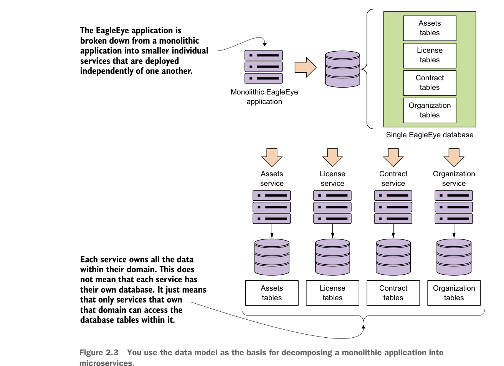

2.1.2 Xác định mức độ chi tiết của dịch vụ
Khi bạn đã có mô hình dữ liệu được đơn giản hóa, bạn có thể bắt đầu quá trình xác định những microservice nào bạn sẽ cần trong ứng dụng. Dựa trên mô hình dữ liệu trong hình 2.2, bạn có thể thấy tiềm năng cho bốn microservice dựa trên các thành phần sau:
- Assets
- License
- Contract
- Organization
Mục tiêu là lấy những khối chức năng chính này và tách chúng thành các đơn vị hoàn toàn tự chứa, có thể được xây dựng và triển khai độc lập với nhau. Tuy nhiên, việc tách các dịch vụ từ mô hình dữ liệu không chỉ là đóng gói lại mã nguồn vào các dự án riêng biệt. Nó còn liên quan đến việc tách ra các bảng cơ sở dữ liệu thực tế mà các dịch vụ đang truy cập và chỉ cho phép từng dịch vụ riêng lẻ truy cập các bảng trong miền cụ thể của nó. Hình 2.3 cho thấy mã ứng dụng và mô hình dữ liệu được “chia nhỏ” thành các phần riêng lẻ như thế nào.

Bạn sử dụng mô hình dữ liệu làm cơ sở để phân rã một ứng dụng monolithic thành các microservice.